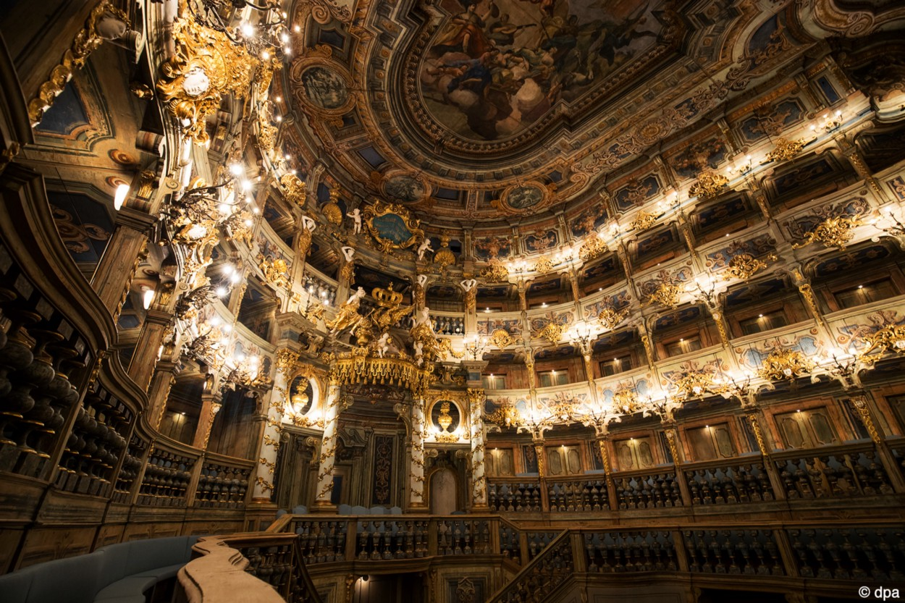

Inscribed as a World Heritage in 2012, the Margravial Opera House in Bayreuth is the most recent Bavarian UNESCO site. It was erected during the 18th century for Margravine Wilhelmine of Brandenburg and is considered a masterpiece of Baroque theatre architecture.
Its bell-shaped auditorium of tiered loges built of wood and lined with decoratively painted canvas was designed by Giuseppe Galli Bibiena, an iconic figure in European theatre architecture of the time. As an independent court opera house rather than part of a palace complex, it marks a key point in opera house design, foreshadowing the large public theatres of the 19th century.
Today it survives as the only entirely preserved example of court opera house architecture where Baroque court opera culture and acoustics can be authentically experienced. After six years of renovation work, the Opera house was festively re-opened in March 2018 with a performance of Artaserse — the very piece performed for its initial opening in 1748.